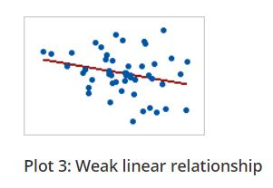
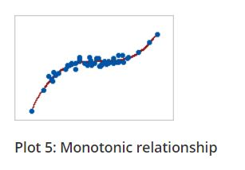
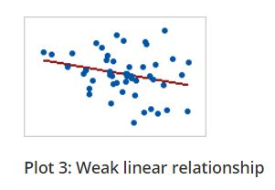
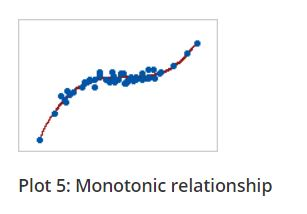

Chapter 7 Measures of Association
7.1 Scatter Diagram
Consider two variables x and y, we use scatter diagram to investigate whether there is any relation between the two variables. If the variables x and y are plotted along the X-axis and Y-axis respectively in the X-Y plane of a graph sheet the resultant diagram of dots is known as scatter diagram. From the scatter diagram we can say whether there is any association between X and Y.
Example 7.1: Consider the data on Sepal length (x) and Sepal width (y) of Iris setosa.
| Sl. No. | Sepal Length | Sepal Width |
|---|---|---|
| 1 | 5.1 | 3.5 |
| 2 | 4.9 | 3 |
| 3 | 4.7 | 3.2 |
| 4 | 4.6 | 3.1 |
| 5 | 5 | 3.6 |
| 6 | 7 | 3.2 |
| 7 | 6.4 | 3.2 |
| 8 | 6.9 | 3.1 |
| 9 | 5.5 | 2.3 |
| 10 | 6.5 | 2.8 |
| 11 | 6.3 | 3.3 |
| 12 | 5.8 | 2.7 |
| 13 | 7.1 | 3 |
| 14 | 6.3 | 2.9 |
| 15 | 6.5 | 3 |
Figure 7.1: Scatter diagram of data in Example 7.1
7.2 Correlation
Correlation is a statistical technique used for analyzing the behaviour of two or more variables. The correlation measures the degree and closeness of the linear relationship between two variables in numerical magnitude.
Correlation measure will enable us to compare the linear relationship between two variables by using a single number. If two or more quantities vary in a related manner so that the movements in one tend to be accompanied by the movements in the other, then they are said to be correlated.
7.2.1 Positive correlation
Positive correlation is a relationship between two variables in which both variables move in the same direction. A positive correlation exists when one variable decreases as the other variable decreases, or one variable increases while the other increases.
Examples of positive correlation: consider two variables x and y
The more time you spend running on a treadmill [Running time (x)], the more calories you will burn [calories burned (y)]. Here you can see as x increases y also increases
Shorter people [Height (x)] have smaller shoe sizes [shoe size (y)]. Here you can see as x decreases y also decreases.
The more hours you spend in direct sunlight [Hours in sunlight (x)], the more is your tan [melanin content(y)]. Here you can see as x increases y also increases
As the temperature goes up [Temperature (x)], ice cream sales [sales (y)], also go up.
7.2.2 Negative correlation
Negative correlation is a relationship between two variables in which one variable increases as the other decreases, and vice versa.
Examples of negative correlation: consider two variables x and y
A student who has many absences [No. of days absent (x)] has a decrease in grades [grades (x)]. Here you can see as x increases y decreases.
As weather gets colder [Average monthly temperature (x)], air conditioning costs decrease [Price of A.C (y)].
If a chicken increases in age [chicken age (x)], the number of eggs it produces [No. of eggs produced (y)] decreases.
If a car decreases speed [average car speed(x)], travel time (y) to a destination increases.
7.3 Other types of correlation
7.3.1 Simple and Multiple
In simple correlation the relationship is confined to two variables only. In multiple correlation the relationship between more than two variables is judged.
7.3.2 Partial and total
There are two types of correlations in multiple correlation analysis.
Under partial correlation the relationship of two or variables is examined after eliminating the linear effect of other correlated variables.
The total correlation is based on all relevant variables.
Correlation measures only linear relationship between variables
7.4 Linear relationship
A linear relationship (or linear association) is a statistical term used to describe a straight-line relationship between variables.
Linear relationships can be expressed either in a graphical format where the variable plotted on X-Y plane gives a straight line or relation between two variables (consider x and y) can be expressed with an equation of a straight line (y = a + bx) (**will be more clear when we discuss regression)
Example 7.2: Consider the following example of ice cream sales
The local ice cream shop keeps track of how much ice cream they sell versus the temperature on that day; here are their figures for the last 12 days:
| Temperature (°C) | Ice Cream Sales (in $) |
|---|---|
| 14.2 | 215 |
| 16.4 | 325 |
| 11.9 | 185 |
| 15.2 | 332 |
| 18.5 | 406 |
| 22.1 | 522 |
| 19.4 | 412 |
| 25.1 | 614 |
| 23.4 | 544 |
| 18.1 | 421 |
| 22.6 | 445 |
| 17.2 | 408 |
For the rest of our discussion we will be using this example .
7.5 Methods of measurement of correlation
7.5.1 Scatter diagram or Graphic method

Figure 7.2: Scatter plot of Example 7.2
From the Figure 7.2 above you can see a linear association between the two variables i.e. between temperature and ice cream sales. It can be shown using a line as below. It is clear that as temperature increases sales increases, indicating a positive correlation.
Figure 7.3: Linear relationship between variables
From the example it is clear that scatter diagram gives an idea on linear association between variables, so it can also used as a graphical tool to see whether there is correlation is present or not.
Perfect Correlation: If there is any change in the value of one variable, the value of the other variable is changed in a fixed proportion then the correlation between them is said to be a perfect correlation. If there is a perfect correlation, the points will lie in the straight line. In the scatter diagram of Example 7.2, you can see that there is no perfect linear relationship as the points are not exactly in the line, but the points are in some scattered form but still have a direction (positive).
Direction of correlation can be identified using a scatter diagram as shown below in Figure 7.4
Figure 7.4: Scatter plot and nature of relationship
7.5.2 Karl Pearson’s coefficient of Correlation (r)
It is the most important and widely used measure of correlation. A measure of the intensity or degree of linear relationship between two variables is developed by Karl Pearson, a British Biometrician - known as the Pearson’s Correlation coefficient denoted by r which is expressed as the ratio of the covariance to the product of the standard deviations of the two variables.
7.5.2.1 Covariance
Covariance is a measure of the joint linear variability of the two variables. Consider two variables x and y with n observations each, then covariance is given by the formula
Covariance of (x,y) = \(\frac{1}{n}\sum_{i = 1}^{n}{\left( x_{i} - \overline{x} \right)\left( y_{i} - \overline{y} \right)}\)
When covariance = 0 there is no joint variability or there is no linear relationship. The unit of covariance is the product of the units of the two variables.
Covariance of two variables x and y is denoted as Cov(x, y). Covariance measure is used to find correlation coefficient.
The correlation coefficient between the two variables (x and y) is
calculated as
\[r=\frac{cov(x,y)}{sd(x)sd(y)}\]
Where sd. is the standard deviation.
\[r = \frac{\frac{1}{n}\sum_{i = 1}^{n}{\left( x_{i} - \overline{x} \right)\left( y_{i} - \overline{y} \right)}}{\sqrt{\frac{1}{n}\sum_{i = 1}^{n}\left( x_{i} - \overline{x} \right)^{2}\frac{1}{n}\sum_{i = 1}^{n}\left( y_{i} - \overline{y} \right)^{2}}}\] #### Properties of the correlation coefficient (r)
It is a pure number independent of both origin and scale of the units of the observations.
It always lies between −1 and +1 (absolute value cannot exceed unity). −1 ≤ r ≤ +1
r = +1, indicates perfect positive correlation. r = −1, indicates perfect negative correlation. r = 0, indicates no correlation.
When the correlation is zero then there is no linear relationship between the variables.
If there is no meaningful relation between the variables the value of the correlation obtained is also meaningless. (For example as fertilizer price increases, Kohili’s batting average also increases, we know there no practical relationship between these variables, still we may get a correlation measure and it is called spurious correlation)
A Simplified formula for computation of correlation coefficient can be derived by modifying above formula
\[r = \frac{n\left( \sum_{i = 1}^{n}{x_{i}y_{i}} \right) - \sum_{i = 1}^{n}{x_{i}\sum_{i = 1}^{n}y_{i}}}{\sqrt{\left\lbrack n\sum_{i = 1}^{n}{x_{i}^{2} - \left( \sum_{i = 1}^{n}x_{i} \right)^{2}} \right\rbrack\left\lbrack n\sum_{i = 1}^{n}{y_{i}^{2} - \left( \sum_{i = 1}^{n}y_{i} \right)^{2}} \right\rbrack}}\]
Example 7.3: Consider the Example 7.2 of ice cream sales; find correlation coefficient (r)
| Sl. No. | Temperature | Sales | \(x_{i}-\overline{x}\)(1) | \(y_{i}-\overline{y}\)(2) | (1).(2) | \((x_{i}-\overline{x})^{2}\) | \((y_{i}-\overline{y})^{2}\) |
|---|---|---|---|---|---|---|---|
| (x) | (y) | ||||||
| 1 | 14.2 | 215 | -4.475 | -187.42 | 838.69 | 20.0256 | 35125.01 |
| 2 | 16.4 | 325 | -2.275 | -77.417 | 176.123 | 5.17563 | 5993.34 |
| 3 | 11.9 | 185 | -6.775 | -217.42 | 1473 | 45.9006 | 47270.01 |
| 4 | 15.2 | 332 | -3.475 | -70.417 | 244.698 | 12.0756 | 4958.507 |
| 5 | 18.5 | 406 | -0.175 | 3.58333 | -0.6271 | 0.03063 | 12.84028 |
| 6 | 22.1 | 522 | 3.425 | 119.583 | 409.573 | 11.7306 | 14300.17 |
| 7 | 19.4 | 412 | 0.725 | 9.58333 | 6.94792 | 0.52562 | 91.84028 |
| 8 | 25.1 | 614 | 6.425 | 211.583 | 1359.42 | 41.2806 | 44767.51 |
| 9 | 23.4 | 544 | 4.725 | 141.583 | 668.981 | 22.3256 | 20045.84 |
| 10 | 18.1 | 421 | -0.575 | 18.5833 | -10.685 | 0.33062 | 345.3403 |
| 11 | 22.6 | 445 | 3.925 | 42.5833 | 167.14 | 15.4056 | 1813.34 |
| 12 | 17.2 | 408 | -1.475 | 5.58333 | -8.2354 | 2.17563 | 31.17361 |
| SUM | 224.1 | 4829 | 0 | 0 | 5325.03 | 176.983 | 174754.9 |
n =12
\[mean,\overline{x} = \ \frac{224.1}{12} = 18.675\]
\[mean,\overline{y} = \ \frac{4829}{12} = 402.416\]
Cov (x,y) = \(\frac{1}{n}\sum_{i = 1}^{n}{\left( x_{i} - \overline{x} \right)\left( y_{i} - \overline{y} \right)}\)
\(\sum_{i = 1}^{12}{\left( x_{i} - \overline{x} \right)\left( y_{i} - \overline{y} \right)} = 5325.03\)
Cov (x,y) = \(\frac{5325.03}{12} = 443.752\)
\[Standard\ deviation,\ S.D\left( x \right) = \ \sqrt{\frac{1}{n}\sum_{i = 1}^{n}\left( x_{i} - \overline{x} \right)^{2}} = \sqrt{\frac{176.983}{12}} = 3.840\]
\[Standard\ deviation,\ S.D\left( y \right) = \ \sqrt{\frac{1}{n}\sum_{i = 1}^{n}\left( y_{i} - \overline{y} \right)^{2}} = \sqrt{\frac{174754.9}{12}} = 120.676\]
\(r = \frac{443.752}{3.840\ \times 120.676} = 0.95751\), which indicates a strong positive correlation
7.5.3 Spearman’s Rank order correlation coefficient (ρ)
The Spearman correlation evaluates the monotonic relationship between two continuous or ordinal variables.
Note: What is a monotonic relation?
In a monotonic relationship, the variables tend to move in the same relative direction, but not necessarily at a constant rate. In a linear relationship, the variables move in the same direction at a constant rate.
Linear relationship is monotonic but all monotonic relations are not linear. You can see the plots below for better understanding.
 

Figure 7.5: Linear and Monotonic relationship
The Spearman correlation coefficient is based on the ranked values for each variable rather than the raw data. The spearman correlation measures the monotonic relationship between variables, where pearsons correlation coefficient measures linear relationship only. To use Spearman’s correlation coefficient your data must be in ordinal, interval or ratio scale.
There are two cases in calculating ρ. One is in case of no tied rank other is when there is tied rank
7.5.3.1 No tied rank case
When two or more distinct observations have the same value, thus being given the same rank, they are said to be tied
The formula for the Spearman rank correlation coefficient when there are no tied ranks is:
\[\rho = 1 - \frac{6\sum_{i = 1}^{n}d_{i}^{2}}{n\left( n^{2} - 1 \right)}\]
Where \(d_{i}\) is the difference between ranks of ith pair of observation
Example 7.4: Calculation of Spearman’s rank correlation when there is no tied rank is explained step by step by using the example below
The scores for nine students in physics and math are as follows:
Physics: 35, 23, 47, 17, 10, 43, 9, 6, 28
Mathematics: 30, 33, 45, 23, 8, 49, 12, 4, 31
Compute the student’s ranks in the two subjects and compute the Spearman rank correlation.
| Physics | Mathematics |
|---|---|
| 35 | 30 |
| 23 | 33 |
| 47 | 45 |
| 17 | 23 |
| 10 | 8 |
| 43 | 49 |
| 9 | 12 |
| 6 | 4 |
| 28 | 31 |
Step 1: Find the ranks for each individual subject. Rank the scores from greatest to smallest; assign the rank 1 to the highest score, 2 to the next highest and so on:
| Physics (x) | Rank | Mathematics (y) |
Rank |
|---|---|---|---|
| 35 | 3 | 30 | 5 |
| 23 | 5 | 33 | 3 |
| 47 | 1 | 45 | 2 |
| 17 | 6 | 23 | 6 |
| 10 | 7 | 8 | 8 |
| 43 | 2 | 49 | 1 |
| 9 | 8 | 12 | 7 |
| 6 | 9 | 4 | 9 |
| 28 | 4 | 31 | 4 |
Step 2: Add a column d, to your data. The d is the difference between ranks. For example, the first student’s physics rank is 3 and math rank is 5, so the difference is -2. In the next column, square your d values.
| Physics (x) | Rank | Mathematics (y) |
Rank | d | d2 |
|---|---|---|---|---|---|
| 35 | 3 | 30 | 5 | -2 | 4 |
| 23 | 5 | 33 | 3 | 2 | 4 |
| 47 | 1 | 45 | 2 | -1 | 1 |
| 17 | 6 | 23 | 6 | 0 | 0 |
| 10 | 7 | 8 | 8 | -1 | 1 |
| 43 | 2 | 49 | 1 | 1 | 1 |
| 9 | 8 | 12 | 7 | 1 | 1 |
| 6 | 9 | 4 | 9 | 0 | 0 |
| 28 | 4 | 31 | 4 | 0 | 0 |
| SUM | 12 |
Step 4: Sum (add up) all of your d2 values. 4 + 4 + 1 + 0 + 1 + 1 + 1 + 0 + 0 = 12. You’ll need this for the formula (the \(\sum_{i = 1}^{n}d_{i}^{2}\) is just “the sum of d2values, here n= 9”).
Step 5: Insert the values into the formula.
\[\rho = 1 - \frac{6\sum_{i = 1}^{n}d_{i}^{2}}{n\left( n^{2} - 1 \right)}\]
\[\rho = 1 - \frac{6 \times 12}{9\left( 81 - 1 \right)} = 0.90\]
The Spearman’s Rank Correlation for this set of data is 0.9.
Spearman’s Rank Correlation also lies between −1 and +1 always. −1 ≤ ρ ≤+1
7.5.3.2 Tied rank case
Calculation of Spearman’s rank correlation when there is tied rank is explained step by step by using the example below
Example 7.5: The scores for nine students in physics and mathematics are as follows:
Physics (x) |
Mathematics (y) |
|---|---|
| 35 | 30 |
| 23 | 33 |
| 47 | 45 |
| 23 | 23 |
| 10 | 8 |
| 43 | 49 |
| 9 | 12 |
| 6 | 33 |
| 28 | 33 |
Step 1: Consider the marks in Physics, ranked as usual
Physics (x) |
Rank |
|---|---|
| 35 | 3 |
| 23 | 5 |
| 47 | 1 |
| 23 | 6 |
| 10 | 7 |
| 43 | 2 |
| 9 | 8 |
| 6 | 9 |
| 28 | 4 |
You can see the value 23 is repeated, so may have equal ranks, so the average of two ranks 5 and 6 is given to both; \(\left( \frac{5 + 6}{2} \right)\ \)= 5.5
Physics (x) |
Rank |
|---|---|
| 35 | 3 |
| 23 | 5.5 |
| 47 | 1 |
| 23 | 5.5 |
| 10 | 7 |
| 43 | 2 |
| 9 | 8 |
| 6 | 9 |
| 28 | 4 |
Similarly for marks in mathematics you can see 33 is repeated thrice.
Mathematics (y) |
|---|
| 30 |
| 33 |
| 45 |
| 23 |
| 8 |
| 49 |
| 12 |
| 33 |
| 33 |
Mathematics (y) |
Rank |
|---|---|
| 30 | 6 |
| 33 | 3 |
| 45 | 2 |
| 23 | 7 |
| 8 | 9 |
| 49 | 1 |
| 12 | 8 |
| 33 | 4 |
| 33 | 5 |
You can see the value 33 is repeated thrice, so the average of three ranks 3, 4 and 5 is given \(\left( \frac{3 + 4 + 5}{3} \right)\ \)= 4
Mathematics (y) |
Rank |
|---|---|
| 30 | 6 |
| 33 | 4 |
| 45 | 2 |
| 23 | 7 |
| 8 | 9 |
| 49 | 1 |
| 12 | 8 |
| 33 | 4 |
| 33 | 4 |
Step 2: Change in the formula
\[\rho = 1 - \frac{6\left( \sum_{i = 1}^{n}d_{i}^{2} + T_{x} + T_{y} \right)}{n\left( n^{2} - 1 \right)}\]
If there are m individuals tied (having same rank), and s such sets of ranks are there in X- series then, \(T_{x} = \ \frac{1}{12}\sum_{i = 1}^{s}{m_{i}\left( m_{i}^{2} - 1 \right)}\)
In our example marks in Physics (x) there are two 23 values tied therefore m = 2; since only one such a set is there s =1
\(T_{x} = \ \frac{1}{12}\left( 2 \times (2^{2} - 1 \right)\) = 0.5
If there are w individuals tied (having same rank), and s’ such sets of ranks are there in Y- series then, \(T_{y} = \ \frac{1}{12}\sum_{i = 1}^{s'}{w_{i}\left( w_{i}^{2} - 1 \right)}\)
In our example marks in Mathematics (y) there are three 33 values tied therefore w = 3; since only one such a set is there s =1
\(T_{y} = \ \frac{1}{12}\left( 3 \times (3^{2} - 1 \right)\) = 2
Step 2: Calculate d and then use the formula
Physics (x) |
Rank | Mathematics (y) |
Rank | d | d2 |
|---|---|---|---|---|---|
| 35 | 3 | 30 | 6 | -3 | 9 |
| 23 | 5.5 | 33 | 4 | 1.5 | 2.25 |
| 47 | 1 | 45 | 2 | -1 | 1 |
| 23 | 5.5 | 23 | 7 | -1.5 | 2.25 |
| 10 | 7 | 8 | 9 | -2 | 4 |
| 43 | 2 | 49 | 1 | 1 | 1 |
| 9 | 8 | 12 | 8 | 0 | 0 |
| 6 | 9 | 33 | 4 | 5 | 25 |
| 28 | 4 | 33 | 4 | 0 | 0 |
| SUM | 0 | 44.5 |
\(\rho = 1 - \frac{6\left( \sum_{i = 1}^{n}d_{i}^{2} + T_{x} + T_{y} \right)}{n\left( n^{2} - 1 \right)} = 1 - \frac{6 \times \left( 44.5 + 0.5 + 2 \right)}{9\left( 9^{2} - 1 \right)} = \ 1 - \frac{282}{720}\) = 0.60834
7.5.4 Kendall’s Rank Correlation Coefficient (τ)
Kendall’s rank correlation coefficient also known as Kendall’s Tau or coefficient of concordance. It lies between 0 and 1, 0 ≤ τ ≤ 1. when several sets of ranks are there, it can be used to test the association.
When we have k sets of rankings we may determine the association among them by using the Kendall’s coefficient of Concordance (τ). Such a measure is useful to study the reliability in the scorings made by a number of Judges.
Arrange the data into a table with each row representing the ranks assigned by (each judge), to say, n number of objects. Let there be k number of sets of rankings for each object given by k judges. Then the Kendall’s coefficient of concordance τ is computed as
\[\tau = \frac{12\left\lbrack \sum_{i = 1}^{n}{R_{i}^{2} - \frac{\left( \sum_{i = 1}^{n}R_{i} \right)^{2}}{n}} \right\rbrack}{k^{2}n\left( n^{2} - 1 \right)}\]
Example 7.6: In a crop production competition, 10 entries of farmers were ranked by agricultural scientists (judges). Find the degree of agreement among the scientist for the competition result given below.
| Ranks given by the judges to farmers | ||||
|---|---|---|---|---|
| Farmers | Scientist 1 | Scientist 2 | Scientist 3 | Scientist 4 |
| 1 | 4 | 5 | 3 | 7 |
| 2 | 10 | 9 | 8 | 6 |
| 3 | 8 | 6 | 10 | 9 |
| 4 | 3 | 4 | 2 | 1 |
| 5 | 1 | 3 | 4 | 2 |
| 6 | 2 | 1 | 1 | 4 |
| 7 | 5 | 7 | 6 | 5 |
| 8 | 6 | 2 | 5 | 3 |
| 9 | 7 | 8 | 9 | 10 |
| 10 | 9 | 10 | 7 | 8 |
Solution:
| Farmers | S1 | S2 | S3 | S4 | \(R_{i}\) (sum of ranks) | \[R_{i}^{2}\] |
|---|---|---|---|---|---|---|
| 1 | 4 | 5 | 3 | 7 | 19 | 361 |
| 2 | 10 | 9 | 8 | 6 | 33 | 1089 |
| 3 | 8 | 6 | 10 | 9 | 33 | 1089 |
| 4 | 3 | 4 | 2 | 1 | 10 | 100 |
| 5 | 1 | 3 | 4 | 2 | 10 | 100 |
| 6 | 2 | 1 | 1 | 4 | 8 | 64 |
| 7 | 5 | 7 | 6 | 5 | 23 | 529 |
| 8 | 6 | 2 | 5 | 3 | 16 | 256 |
| 9 | 7 | 8 | 9 | 10 | 34 | 1156 |
| 10 | 9 | 10 | 7 | 8 | 34 | 1156 |
| SUM | 220 | 5900 |
Here k = number of judges = 4
n = number of farmers =10
\(\left( \sum_{i = 1}^{10}R_{i} \right)^{2}\ \)= (220)2 = 48400
\(\sum_{i = 1}^{10}R_{i}^{2}\) = 5900
\[\tau = \frac{12\left\lbrack \sum_{i = 1}^{n}{R_{i}^{2} - \frac{\left( \sum_{i = 1}^{n}R_{i} \right)^{2}}{n}} \right\rbrack}{k^{2}n\left( n^{2} - 1 \right)}\]
=
\(\tau = \frac{12\left\lbrack 5900 - \frac{48400}{10} \right\rbrack}{16 \times 10\left( 100 - 1 \right)}\)
= 0.803
Since \(\tau\) is nearly equal to 1, the ranks given by judges were almost same
*************************************************